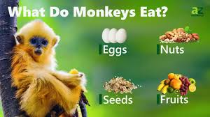

When we think of food for monkeys, many people immediately think of bananas. While bananas are indeed a favorite treat for many monkey species, their diet is actually quite diverse and varies depending on their habitat and species.
Here is a photo of their preferred foods:
